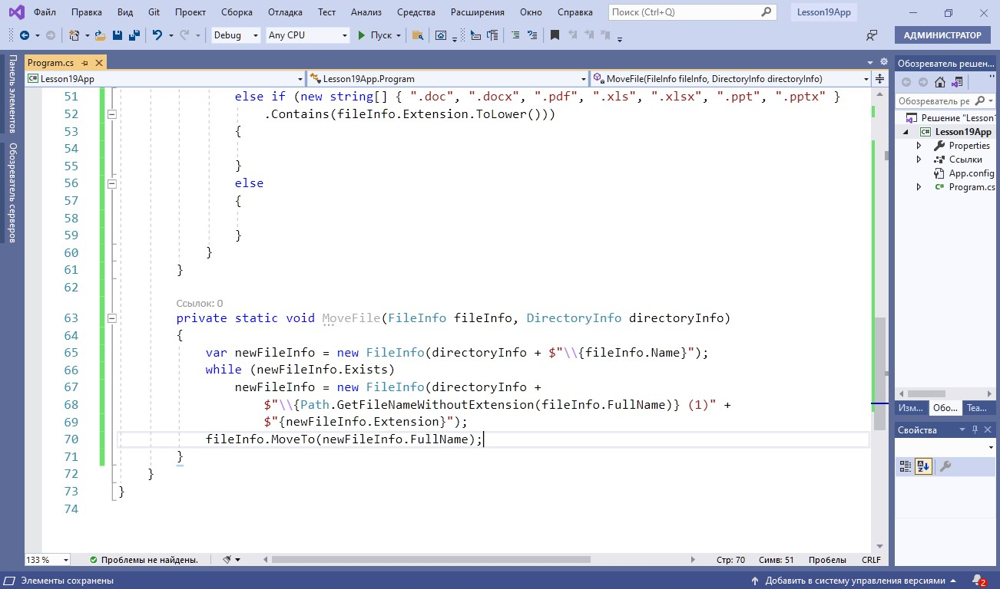

Демонстрация работы с пространством имен System.IO
На данном занятии будет разработано простое консольное приложение для структурирования файлов с произвольного носителя. Итогом работы приложения будет служить набор папок, содержащих файлы, отсортированные в соответствие с критериями сортировки, а также файл Info.txt с информацией о количестве отсортированных документов разных типов. Основные шаги построения приложения:
- Начало работы в Main()
- Реализация перебора папок
- Реализация первичной сортировки файлов
- Реализация перемещения файлов
- Уточнение критериев сортировки файлов
- Завершение работы с Main()
Важно
Для работы с каталогами в пространстве имен System. IO предназначены два класса со схожими возможностями: класс Directory и DirectoryInfo. На данном занятии преимущественно используется DirectoryInfo
Начало работы в Main()
1. Получаем путь к диску
Важно
Путь запрашивается у пользователя и записывается в переменную directoryPath
2. Выводим информацию о диске
Важно
Информация о диске (название, общий объем и свободное место в мегабайтах) выводятся с помощью свойств класса DriveInfo
Реализация метода перебора папок
1. Готовим переменную для хранения пути к корневой директории и создаем метод для перебора подкаталогов корневой директории
Важно
Путь к корневой директории записывается в переменную _rootDirectory. Метод SearchDirectories() будет осуществлять поиск в _rootDirectory
2. Создаем папку для хранения отсортированных файлов
Важно
После сортировки все файлы будут распределены на изображения, документы и прочее
3. Реализуем тело метода фильтрации каталогов
Важно
Метод SearchDirectories() рекурсивно разбирает файлы методом FilterFiles() во всех подкаталогах данного каталога. Функциональность работы для работы с файлами предоставляют классы File и FileInfo
Реализация первичной сортировки файлов
Важно
Метод GetFiles() позволяет получить все файлы в данной директории. С помощью цикла foreach файлы далее распределяются по папкам в зависимости от их типа (изображения, файлы, прочее)
Реализация перемещения файлов

Важно
Метод MoveFile() перемещает файл (методом MoveTo()) в папку для хранения отсортированных файлов. Наличие дубликатов проверяется свойством Exists. Если файл является дубликатом, в его название с помощью метода Path. GetFileNameWithoutExtension() добавляется «(1)» перед
расширением
Уточнение критериев сортировки файлов
1. Уточняем сортировку изображений
Важно
Изображения дополнительно сортируются по годам. Свойство LastWriteTime позволяет получить дату создания изображения
2. Уточняем сортировку документов
Важно
Документы дополнительно сортируются по размеру (менее 1 Мб; более 1 Мб и менее 10 Мб; более 10 Мб). Для получения информации о размере используется свойство Length. Так же, как и изображения, документы далее перемещаются с помощью метода «MoveFile (fileInfo, lengthDirectory)»
3. Уточняем сортировку прочих файлов
Важно
Прочие файлы (при наличии) перемещаются в папку «Прочее»
Завершение работы с Main()
1. Удаляем пустые каталоги
Важно
Пустые каталоги удаляются с помощью метода Delete() с параметром «Recursive=true», который разрешает удалять все подкаталоги
2. Создаем счетчики для хранения информации о количестве обработанных файлов разных типов
Важно
Для каждого типа файлов создается свой счетчик
3. Используем счетчик для подсчета количества обработанных файлов
Важно
Счетчик увеличивается на один после каждого перемещения файла. Аналогичный код добавляется после перемещения документов и прочих файлов
4. Выводим итоговую информацию в консоль и в файл
Важно
Текстовый файл «Инфо.txt» создается с помощью метода WriteAllText()
Завершение работы с Main()
Итоги
Вы узнали об основных методах работы с файлами и каталогами, которые предоставляются пространством имен System.IO.